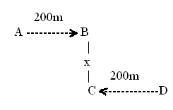
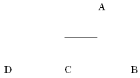

Scopul acestui laborator este de a înțelege conceptul de Carrier-Sensing în 802.11 și de a compara mecanismele fizic și virtual de a testa prezența purtătoarei.
CS la nivel fizic este folosit atunci când un nod care vrea să transmită mai întâi evaluează starea canalului. Dacă energia detectată este peste un anumit prag, numit 'Carrier sense threshold', canalul este declarat ocupat, iar nodul trebuie să aștepte. Altfel, canalul este considerat liber, și nodul poate începe transmisia.
În contrast, CS virtual folosește indicațiile NAV (Network Allocation Vector) pentru a estima cât timp este mediul ocupat. În principiu, o stație recepționează toate cadrele, inclusiv cele care nu îi sunt adresate explicit. Fiecare cadru conține în câmpul 'Duration' o estimare a duratei conversației din care face parte. Un mod explicit de rezervare a mediului se face prin intermefdiul pachetelor RTS/CTS. Emițătorul trimite RTS, iar receptorul răspunde cu CTS. În pașii 3 și 4 se transmit datele și confirmarea ACK în modul obișnuit. Diferența este acum că nodurile vecine au ocazia să estimeze durata conversației în 4 pași prin citirea câmpului 'Durata' fie din RTS, fie din CTS. În ns2 se folosește următorul pseudocod pentru recepția cadrelor de la distanța d în condițiile în care mai poate apărea un cadru de la distanța d1:
recepție(d)
{
if(alt_cadru(d1) && (d1 < CS)){
if(P(d) - P(d1) >= 10dB)
captură()
else
coliziune()
} else {
recepție OK...
}
}
 Pentru experimente se consideră topologia din dreapta. Nodul A transmite pachete cu flux constant CBR către nodul B, iar D transmite către C. Descărcați scriptul twoflows.tcl care primește următorii parametri:
ns twoflows.tcl -RTSthresh {RTS_Threshold} -CSthresh {carrier-sense threshold} -dist {x} -sendingRate {rate}
Cadrele cu lungime mai mare decât RTSthresh vor folosi RTS/CTS. Prin setarea acestui parametru la o valoare mare (3000) se dezactivează RTS/CTS. Setând acest parametru la 1 garantează folosirea RTS/CTS pentru toate cadrele. În scriptul furnizat se folosesc parametrii CSThresh_ și RXThresh_ pentru nivelele de putere în wați pentru CS și recepție respectiv. Setările de bază în ns2 corespund la 250m pentru recepție, și 550m pentru CS. În acest laborator nu vom schimba nivelul pragului de recepție, ci doar pe cel de CS, folosind parametrul din linia de comandă. Astfel, CSThresh=250m corespunde dezactivării CS fizic. Pentru a obține nivelele de putere corespunzând diverselor distanțe, se poate folosi utilitarul
/opt/ns/ns-2.34/indep-utils/propagation/threshold -m TwoRayGround [distanță_metri]
cu modelul TwoRayGround și păstrând toți ceilalți parametri la valorile default. Unele dintre aceste valori sunt deja calculate în scriptul twoflows.tcl (sunt comentate). Nu folosiți -fr 2.4e9, întrucât TwoRayGround trece la Friis sub 235m (vezi /opt/ns/ns-2.34/mobile/tworayground.cc). Pentru fiecare valoare CSThresh, rulați simularea dezactivând RTS/CTS pentru valori x=100m, 200m, 300m, si pentru fiecare valoare CSThresh corespunzătoare distanțelor 250m, 300m, 400m, 550m. Atenție, scriptul cere valoarea CSThresh în watți, nu în dBm, și nici în metri. $$ 1mW = 10^{-6}W\\ dBm = 10\log_{10}{mW} \\ mW =10^{\frac{dBm}{10}} $$
În utilitarul POSIX bc, aceste formule se pot exprima astfel:
$ dBm=24 $ mW=3.5*10^-7 # atenție: bc nu acceptă formatul IEEE 3.5e-7 acceptat de tcl/C++ $ echo "e($dBm/10*l(10))" | bc -l adică 24dBm = 1258.92mW (1.25892W) $ echo "10*l($mW)/l(10)" | bc -l adică 3.5e-7mW = -64.5dBm
Repetați toate experimentele și pentru cazul în care RTS/CTS este activat pentru toate cadrele. Pentru fiecare situație, calulați debitul și numărul de pachete trimise/primite la nivel UDP. Folosiți indicațiile din laboratorul precedent pentru a sintetiza aceste statistici din fișierul trace rezultat în urma simulării. Din comenzile folosite în laboratorul trecut:
cat fișier.tr | grep AGT | grep ^s |grep cbr | wc -l
cat fișier.tr | grep AGT | grep ^r |grep cbr | wc -l
cat fișier.tr | grep MAC | grep ^s |grep cbr | wc -l
cat fișier.tr | grep COL | grep ^d |grep cbr | wc -l
cat fișier.tr | grep COL | grep ^d |grep -v cbr | wc -l
Cumulați toate rezultatele fie în tabele, fie în grafuri cu bare. Încercați să explicați fiecare număr obținut.
IEEE 802.11 se bazează în principal pe două mecanisme pentru a combate interferența: CS la nivel fizic și la nivel virtual. În ce măsură sunt capabile aceste mecanisme de a rezolva conflictele dintre stații aflate în diverse configurații geometrice?
În ns-2, un cadru este recepționat corect atunci când nivelul interferenței de la alte cadre este sub 10dB. Folosind utilitarul
/opt/ns/ns-2.34/indep-utils/propagation/threshold, puteți calcula puterea recepționată la o anumită distanță. De exemplu, două cadre primite de la 200 metri și 200*sqrt(2) metri vor fi distruse, întrucât puterile sunt de 8.9e-10W respectiv 2.2e-10W. Pe de altă parte, dintre două cadre primite de la 200m și 360m, cel de la 200m va fi primit corect prin efectul de captură. La 355.7m avem exact 10dBm fata de 200m. Puteți folosi utilitare online pentru a lucra cu dBm.
Teorema lui Pitagora
echo "sqrt(200^2 + 300^2)" | bc -l
Fiecare experiment este caracterizat de distanța x dintre nodurile B și D, și de distanța la care CS fizic este activ. Justificați valorile obținute pentru: debit, numărul de cadre trimise de MAC, numărul de coliziuni date, numărul de coliziuni non-date.
Să considerăm topologi a din dreapta: 
Distanțele AB, BC, AC, and CD sunt toate de 200m. Avem un obstacol între A și C care nu permite propagarea radio (greu de realizat în ns2, deoarece AD=346m). Care vor fi comportările celor două forme de CS în acest caz? Discutați fiecare schemă și estimați care se va comporta mai bine. Reminder1: ACK se transmite după SIFS de la primire cadru. Reminder2: Un cadru primit cu putere peste CSThresh, dar sub RXThresh va distruge recepția curentă, fără captură.